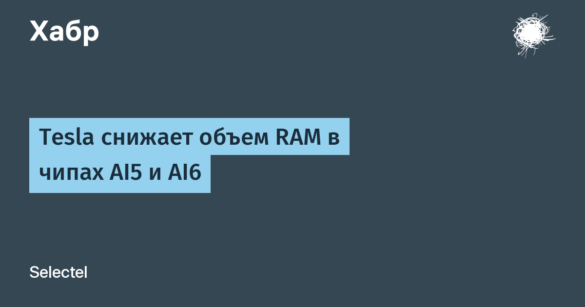

1 октября Илон Маск написал в X, что Tesla «сократила RAM вдвое» для чипа AI5 — теперь это 72 ГБ LPDDR5 вместо ранее планировавшихся 144 ГБ, — и на треть для AI6: 144 ГБ LPDDR6 вместо 216 ГБ. По его словам, это «единственный способ получить достаточные объёмы» памяти и снизить себестоимость, чтобы масштабировать массовое производство роботов Optimus и автомобилей с FSD.
Буквально на следующий день Маск скорректировал спецификацию: у AI5 теперь фигурирует 96 ГБ, а не 72. Само сокращение он при этом подтвердил — относительно прежних 144 ГБ. Так что финальную конфигурацию чипа пока стоит считать плавающей: первичный источник здесь только пост владельца компании, отдельного пресс-релиза Tesla не выпускала.
Чипы AI5/AI6 тянут автономное вождение FSD и антропоморфных роботов Optimus. AI5 делается по 2-нм техпроцессу на TSMC и Samsung, заявленная производительность — 2000–2500 TOPS, пробный выпуск уже идёт на фабрике Samsung в Тейлоре (Техас), серийное производство — 2027 год. Аргумент Маска в пользу «незначительного» падения эффективности: около половины площади вычислительного кристалла занимает накристальный буфер SRAM с пропускной способностью на порядок выше внешней DRAM, плюс квантование моделей. Для сравнения: по оценкам Micron, современному автономному гуманоиду нужно около 200 ГБ DRAM — Tesla явно целит в algorithms вместо brute force.
Урезание памяти — не каприз, а следствие общего сжатия рынка DRAM: LPDDR5/LPDDR6 дорожают и дефицитны, об этом в те же дни писали TrendForce и авторы обзора на Habr. Память из скучного компонента превращается в узкое место всей ИИ-робототехники — и чипогонщики теперь оптимизируют модели под лимит памяти, а не наращивают её.